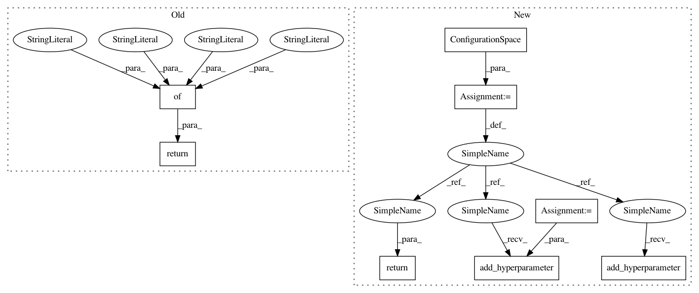

35a9d4d6148f5933db0e3dfda23d8f0acf0403ba,AutoSklearn/components/classification/random_forest.py,RandomForest,get_hyperparameter_search_space,#,59
Before Change
min_samples_split = scope.int(hp_quniform("min_samples_split", 1, 20, 1))
min_samples_leaf = scope.int(hp_quniform("min_samples_leaf", 1, 20, 1))
bootstrap = hp_choice("bootstrap", [True, False])
return {"name": "random_forest",
"n_estimators": n_estimators, "criterion": criterion,
"max_features": max_features, "min_samples_split":
min_samples_split, "min_samples_leaf": min_samples_leaf,
"bootstrap": bootstrap}
@staticmethod
def get_all_accepted_hyperparameter_names():
return (["n_estimators", "criterion", "max_features",
After Change
// Don"t know how to parametrize this...RF should rather be
// regularized by the other parameters
// max_depth = hp_uniform("max_depth", lower, upper)
max_depth = UnParametrizedHyperparameter("max_depth", "__None__")
min_samples_split = UniformIntegerHyperparameter("min_samples_split",
1, 20)
min_samples_leaf = UniformIntegerHyperparameter("min_samples_leaf",
1, 20)
bootstrap = CategoricalHyperparameter("bootstrap", ["True", "False"])
cs = ConfigurationSpace()
cs.add_hyperparameter(n_estimators)
cs.add_hyperparameter(criterion)
cs.add_hyperparameter(max_features)
cs.add_hyperparameter(max_depth)
cs.add_hyperparameter(min_samples_split)
cs.add_hyperparameter(min_samples_leaf)
cs.add_hyperparameter(bootstrap)
return cs
@staticmethod
def get_all_accepted_hyperparameter_names():
return (["n_estimators", "criterion", "max_features",
In pattern: SUPERPATTERN
Frequency: 3
Non-data size: 8
Instances
Project Name: automl/auto-sklearn
Commit Name: 35a9d4d6148f5933db0e3dfda23d8f0acf0403ba
Time: 2014-11-14
Author: feurerm@informatik.uni-freiburg.de
File Name: AutoSklearn/components/classification/random_forest.py
Class Name: RandomForest
Method Name: get_hyperparameter_search_space
Project Name: automl/auto-sklearn
Commit Name: 35a9d4d6148f5933db0e3dfda23d8f0acf0403ba
Time: 2014-11-14
Author: feurerm@informatik.uni-freiburg.de
File Name: AutoSklearn/components/classification/liblinear.py
Class Name: LibLinear_SVC
Method Name: get_hyperparameter_search_space
Project Name: automl/auto-sklearn
Commit Name: 35a9d4d6148f5933db0e3dfda23d8f0acf0403ba
Time: 2014-11-14
Author: feurerm@informatik.uni-freiburg.de
File Name: AutoSklearn/components/classification/libsvm_svc.py
Class Name: LibSVM_SVC
Method Name: get_hyperparameter_search_space
Project Name: automl/auto-sklearn
Commit Name: 35a9d4d6148f5933db0e3dfda23d8f0acf0403ba
Time: 2014-11-14
Author: feurerm@informatik.uni-freiburg.de
File Name: AutoSklearn/components/classification/random_forest.py
Class Name: RandomForest
Method Name: get_hyperparameter_search_space